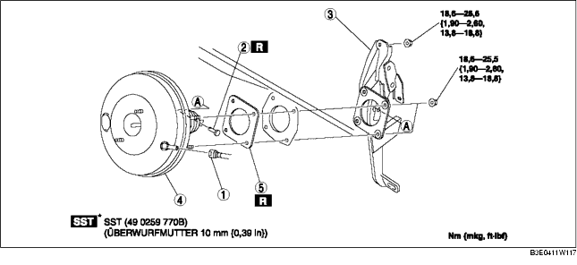

1. Mit den folgenden Schritten den Verdampferschlauch (Niederdruck) in die abgebildete Stellung bewegen. (ZJ, Z6)
2. Mit den folgenden Schritten den Verdampferschlauch (Niederdruck) unter das Fahrzeug bewegen. (VL)
3. Hauptbremszylinder ausbauen. (Siehe HAUPTBREMSZYLINDER AUSBAUEN/EINBAUEN.)
4. Den Steckverbinder des Bremslichtschalters abziehen.
5. Das Gaspedal ausbauen. (Siehe BREMSPEDAL AUSBAUEN/EINBAUEN.)
6. Gemäß der Reihenfolge in der Tabelle ausbauen.
7. Der Einbau erfolgt in umgekehrter Reihenfolge.
8. Nach dem Einbau das Bremspedal prüfen. (Siehe BREMSPEDAL PRÜFEN.)
9. Den Gaszug einstellen. (Siehe GASZUG PRÜFEN/EINSTELLEN [ZJ, Z6].) (Siehe GASZUG PRÜFEN/EINSTELLEN [LF].)

.
|
1
|
Unterdruckschlauch
(Siehe UNTERDRUCKSCHLAUCH AUSBAUEN/EINBAUEN.)
|
|
2
|
Verbindungsstift
(Siehe BREMSPEDAL AUSBAUEN/EINBAUEN.)
|
|
3
|
Bremspedal, komplett
(Siehe Ausbauhinweis für Bremspedal.)
|
|
4
|
Bremskraftverstärker
|
|
5
|
Dichtung
|
1. Die Befestigungsmuttern des Bremspedals abschrauben.
2. Den Bremskraftverstärker in Richtung Fahrzeugheck bewegen.
3. Das Bremspedal ausbauen.